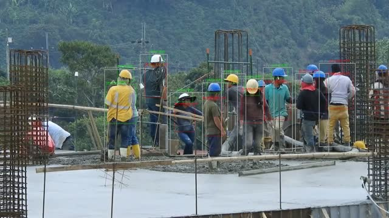

Um voto, não um quadro
Detectores de EPI piscam. Uma maioria de 3 segundos com histerese elimina as caixas vermelhas piscando que tornam sistemas quadro a quadro inviáveis num monitor.
Verifica o equipamento de proteção individual de cada trabalhador num vídeo. Cada pessoa é rastreada e re-identificada, cada capacete, colete, luva, óculos e máscara é associado a quem o usa, e um voto de maioria em 3 segundos só deixa o trabalhador vermelho quando a evidência se mantém. No fim, um modelo visão-linguagem escreve uma frase de relatório para cada trabalhador com violação confirmada.
Dois detectores rodam em cada quadro: um encontra as pessoas e o outro encontra os itens de EPI como usados ou ausentes. Cada item é atribuído à pessoa cuja caixa ele sobrepõe, então o sistema raciocina por trabalhador e não por caixa. A re-identificação mantém o mesmo id quando alguém sai e volta.
Quadros isolados são ruidosos, então a caixa do trabalhador nunca os segue diretamente. Para cada item de EPI, os últimos 3 segundos são lidos como usado, ausente ou desconhecido, e o estado só muda quando 60% dos quadros informativos concordam; quadros desconhecidos nunca o viram.
Numa compilação de seis clipes com obras, carpinteiros, um armazém e uma estrutura industrial (cerca de 83 s), o modelo SafetyVision padrão confirmou estas violações:



| Clipe | Violações confirmadas |
|---|---|
| Obra | NO-Safety Vest, NO-Hardhat |
| Estrutura industrial | NO-Safety Vest, NO-Goggles |
| Carpinteiros | NO-Safety Vest |
| Corredor de armazém | NO-Safety Vest, NO-Hardhat, NO-Goggles |
| Trabalhador em conformidade | nenhuma: capacete e colete ficam verdes |
Imagens: clipes do Pexels listados no repositório. As respostas do VLM são saídas de modelo, então os cartões de relatório são para revisão humana.
Nesta demo renderizada, o vídeo congela na primeira vez que um trabalhador tem a violação confirmada: o recorte é ampliado, o SmolVLM-500M roda nele na CPU e a resposta aparece antes de o vídeo continuar.
git clone https://github.com/karemdm/ppe-compliance-vlm.git
cd ppe-compliance-vlm
python3 -m venv .venv
source .venv/bin/activate
pip install -r requirements.txt
pip install -e .git clone https://github.com/karemdm/ppe-compliance-vlm.git
cd ppe-compliance-vlm
python -m venv .venv
.venv\Scripts\Activate.ps1
pip install -r requirements.txt
pip install -e .git clone https://github.com/karemdm/ppe-compliance-vlm.git
cd ppe-compliance-vlm
python -m venv .venv
.venv\Scripts\activate.bat
pip install -r requirements.txt
pip install -e .ppe-compliance --vlm-model HuggingFaceTB/SmolVLM-500M-Instructppe-compliance analyze --input samples/construction_site.mp4 --output outputs/report.json --save-video outputs/construction_site.mp4 --no-vlmDetectores de EPI piscam. Uma maioria de 3 segundos com histerese elimina as caixas vermelhas piscando que tornam sistemas quadro a quadro inviáveis num monitor.
Associar o EPI a quem o usa dá uma decisão e um relatório por trabalhador, que é o que o técnico de segurança precisa.
Trabalhadores saem do quadro e voltam. Uma galeria de aparência mantém o id, então uma pessoa vira um relatório e não cinco.
O modelo visão-linguagem escreve uma frase curta e legível a partir do recorte. Ele só roda nos casos confirmados, então continua viável até em CPU.
SafetyVision (YOLOv8s, 13 classes) ou CHD (YOLO26-L); a lista de infrações se adapta ao modelo escolhido.
O app guarda o vídeo processado em cache, então mudar o filtro de infrações reseleciona os relatórios na hora.